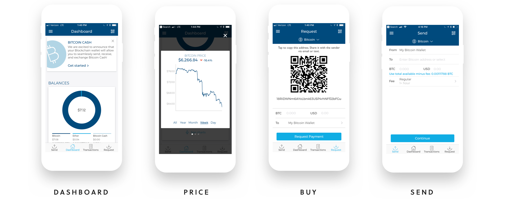
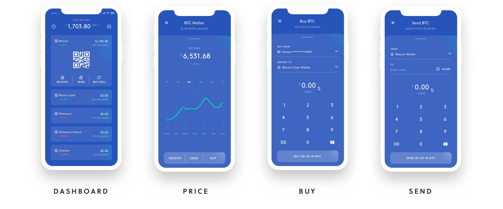

Blockchain Design Exercise
Thank you for the opportunity participate in the design excercise. I've had a lot of fun reimagining the product to introduce two exciting new cryptocurrencies — Ethereum Classic and Litecoin.
I've created this site not only to show the end result, but to dive into the thinking and the process behind it. I've documented my experience to share learnings that influenced the redesign and to provide some insight into my design decisions.
The Challenge
My task is to introduce two new cryptocurrencies in the native iOS app. I'll also need to consider the experience for existing users. My goal is to design an experience that drives adoption of all currencies by improving ease of buying and receiving new coins. For the purpose of this execise, I've defined an objective to increase conversions from app installs to on-boarded customers who have purchased or received coins.
Existing Product
The existing product features 3 coins within the dashboard with shortcuts to send/receive coins and view transaction history. The initial screen doesn't provide a shortcut to buy, send or request individual currencies.

The Solution
I've redesigned the dashboard to display all 5 currencies. Reorganizing the app by currency will reduce unnecessary friction, and allow for display contextually relevant information for each individual currency. Introducing a prominent "buy/sell" call-to-action should increase adoption of the new coins.

The Dashboard
I've repurposed the dashboard to display all 5 coins. Visually, I've chosen a flat skeuomorphic style. A wallet is used as a visual metaphor - although I've avoided the literal representation of a plastic credit card. Cryptocurrencies are something much different! The QR code is prominently featured on each card to allow accessibility of scanning for those in close physical proximity. This should help achieve the goal of reduced friction, allowing merchants to buy and receive new currencies in just a few taps.

Live Pricing
Merchants may be hesitant to adopt cryptocurrencies, due in part to their volatile nature. Price fluctuations can instantly offset any cost benefit of transacting with them. Tapping on a card reveals live pricing in context when it's needed, informing merchants if it's a good time to buy.

Transaction History
Users today have become used to instantaneous feedback when performing tasks. Due to the process of validation and confirmation on a blockchain network, confirming a transaction can take much longer than one might expect. Providing instant feedback will be an integral step toward gaining users trust, and increasing adoption. With instant notifications, merchants will be at ease knowing the status of a transaction at any given time.

What's next?
Cyptocurrencies will continue to provide immense value for merchants, if designers can rise to the challenge of introducing this transformational new technology. Reducing unecsssary friction by leveraging existing conventions and mental models will go a logn way toward achieving that goal. As a next step - I'd bring in actual customers to test this hypothesis and begin the process of creating a solution that reaches that goal.